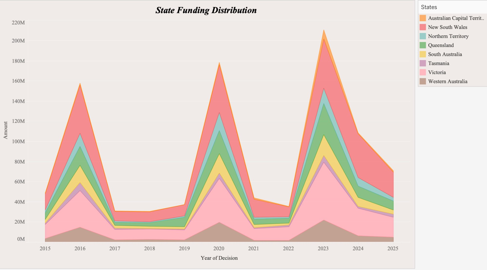
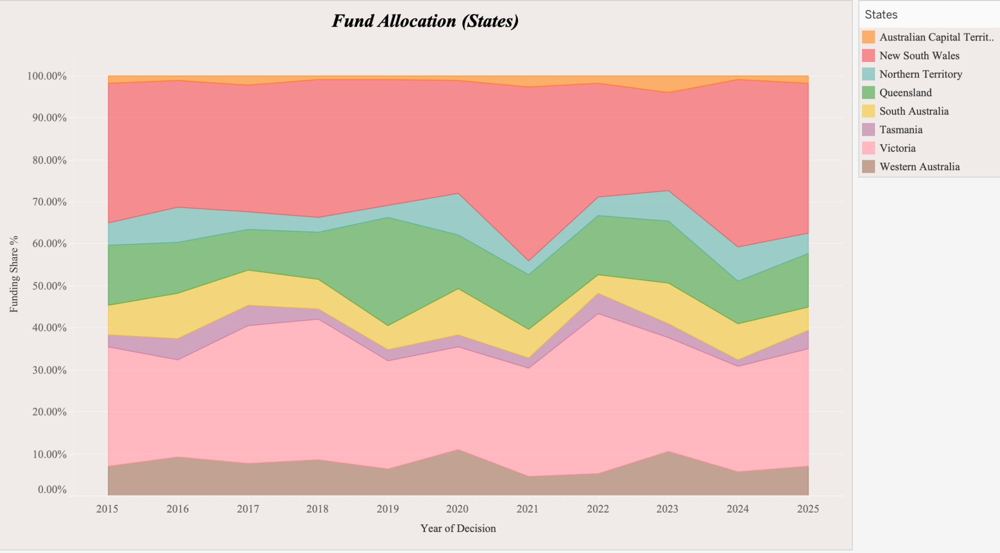
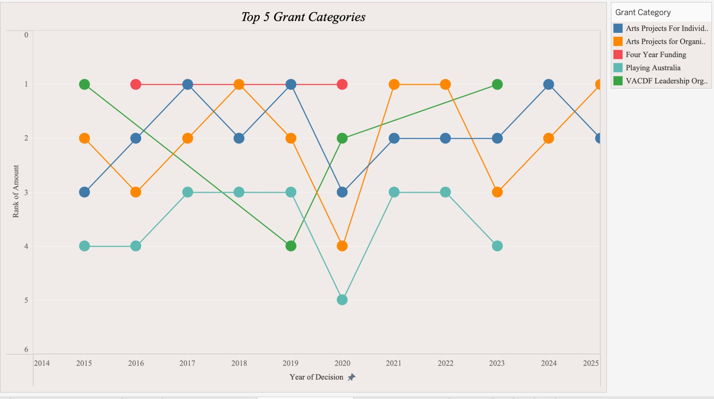
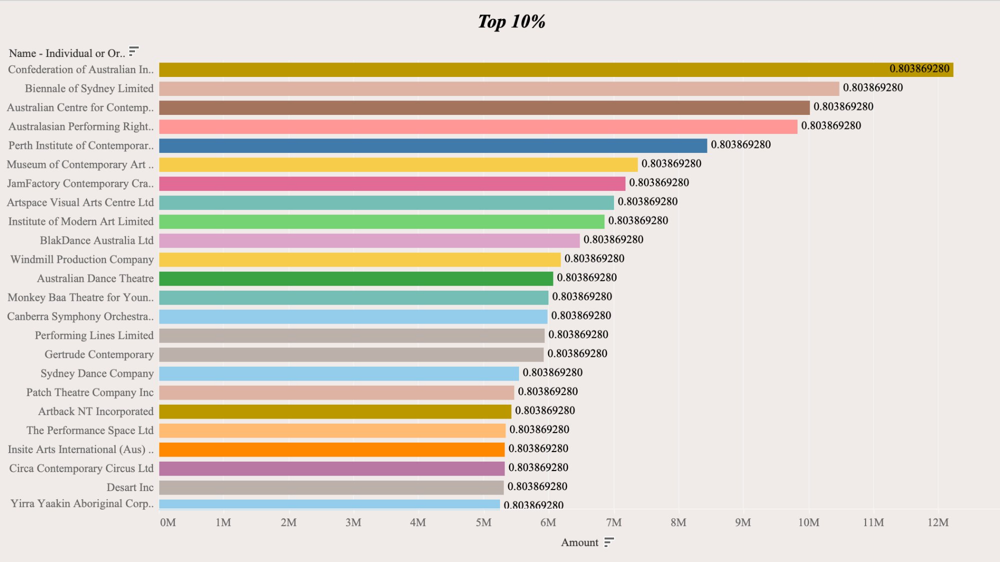
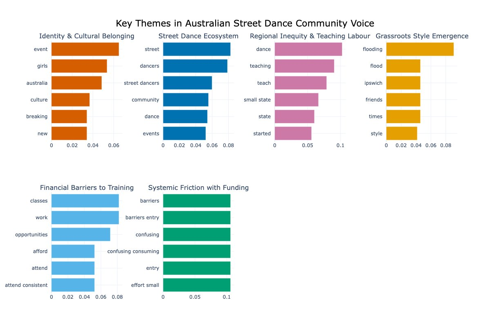

Data Analyst · Melbourne
I analysed a decade of Creative Australia grants and community data and you'll be surprised with what I found.
See the findings ↓A study in two parts
3 Surprising Insights
Victoria's share of national arts funding spiked dramatically around 2023 before declining sharply, while NSW has trended downward over the same period.
Grants DataNLP topic modelling on practitioner voices from the Street Dance in Focus report reveals that systemic friction with funding - confusing processes, high effort, low chance of success - dominates community discourse more than creative practice itself.
Topic ModellingA distinct theme emerged around dancers who teach full-time not by choice but because freelance income is unstable. This labour pattern (teaching as financial necessity) is invisible in funding categories but central to how the sector sustains itself.
Topic ModellingThe Projects
01 — Quantitative
A decade of Creative Australia funding data broken down by state, program, and year.
02 — Qualitative NLP
BERTopic applied to practitioner text from the Street Dance in Focus report. Six themes emerge, where they don't exactly map neatly onto what gets funded..
Project 01 — Quantitative Analysis
I analysed a decade of Creative Australia grants data (2015–2025) for geographic patterns, temporal shifts, and potential structural inequities across states and territories.
This exploratory analysis investigates national arts funding patterns across geography and grant categories to understand distribution dynamics, concentration patterns, and structural signals within the ecosystem. The aim is to simulate how data science techniques can support strategic and policy decision-making at Creative Australia.
Funding peaks in 2016, 2020, and 2023 are visible across all states, suggesting cyclical or programmatic funding surges rather than organic growth. NSW and Victoria consistently anchor total allocation volume, indicating structural concentration in these states.

While absolute allocations fluctuate, relative funding share remains comparatively stable for major states. This might suggest structural proportionality in distribution rather than opportunistic reallocation.

Category ranking volatility between 2019–2021 suggests shifting strategic emphasis, potentially reflecting sector recovery measures during COVID-19. Notably, organisational project funding rises in prominence during high-volume years.


Any reading of this data should account for the following structural limitations:
Funding amount alone does not capture impact, as a small grant to an emerging artist may also generate disproportionate cultural value.
State comparisons are not normalised by population or creative sector size, which may overstate the dominance of NSW and Victoria.
Grant categories may evolve in definition over time, making longitudinal comparisons across categories imprecise.
Decision year may not reflect actual disbursement timing, introducing potential lag effects in the data.
Project 02 — NLP / Text Analysis
I applied BERTopic to practitioner interviews and survey responses from Creative Australia's recent Street Dance in Focus report with Cypher Culture and discovered six themes that addresses existing gaps in funding and support for grassroot communities.
Creative Australia's Street Dance in Focus (2025/2026) contains extended first-person accounts from practitioners about what their work actually feels like from the inside. These include case study interviews, open survey responses, and barriers assessments that provided us a range of text corpus that reflects genuine community voice.
The research question: By applying topic modelling to this language, what themes emerge, and how do they compare to the categories that do receive funding?
BERTopic identified six coherent topic clusters. The chart below shows the most statistically significant keywords per theme.

Identity & Cultural Belonging — Events, participation, and Breaking are the entry point into community, as this is what draws people in and keeps them.
Street Dance Ecosystem — The community infrastructure consists of: dancers, events, organisations, which is what as practitioners understand it, not as institutions define it.
Regional Inequity & Teaching Labour — Starting out in small states with limited access, along with teaching as a means of financial stability, not vocation.
Grassroots Style Emergence — How new Australian styles like Flooding spread informally from word-of mouth across cities and internationally, including culture travelling without institutional support.
Financial Barriers to Training — Day job conflicts, unaffordable classes, inability to attend consistently: The systemic squeeze between financial necessity and professional development.
Systemic Friction with Funding — Grant processes described as confusing, time-consuming, high-effort and low-reward, highlighting barriers that compound existing financial precarity.